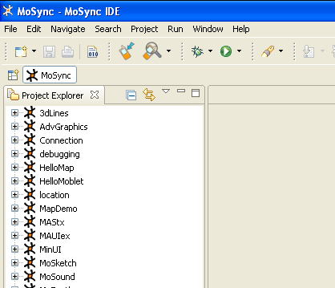

The MoSync SDK comes with dozens of example apps in its /examples folder that demonstrate the use of its Libraries and API functions. Here we show you how to import the example applications into the MoSync IDE. For a description of each example application, see the Example Applications overview.
There are two ways to import the example applications:
After import, the example application projects will be visible in the Project Explorer:

To build and run an example application in the MoRE emulator, open one of the examples in Project Explorer, then click the Run button on the toolbar, or press Ctrl+F11.
Note that some examples (for example those that use NativeUI and OpenGLES) cannot be run in the MoRE emulator. They need to be transfered to a device (see Sending to a Device).
We provide a description of all of our example applications including any requirements they have in our document library online and in the code of the application itself.